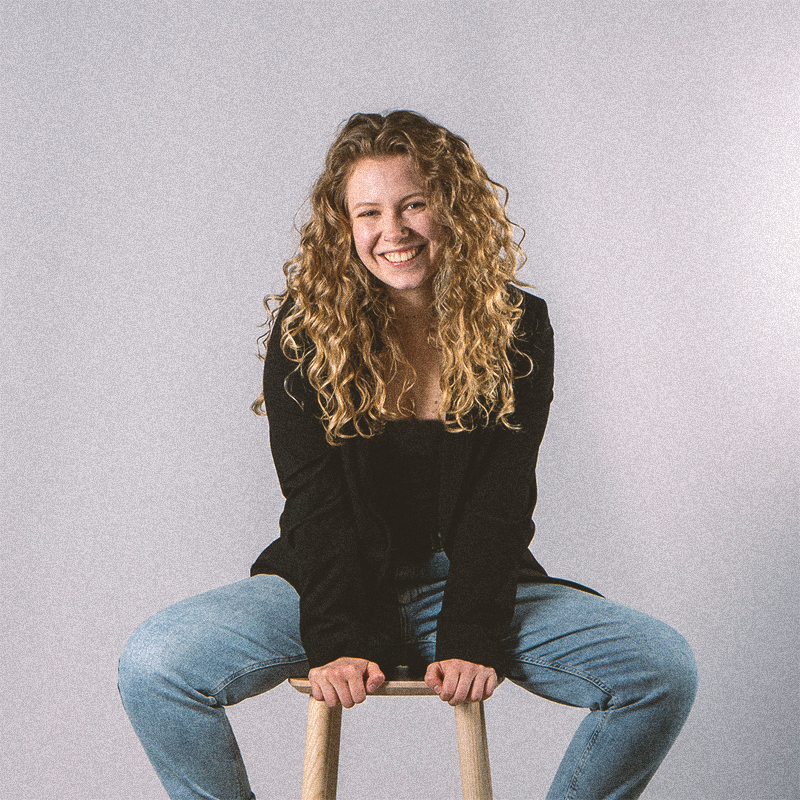

Über mich

Eva
Als ich mit 8 Jahren zum ersten Mal auf der Bühne stand, war mir klar, ich werde mal Schauspielerin.
In der Schule entschied ich mich für einen Musik- und Theaterzweig, spielte mehrere Instrumente und merkte wie sehr mich all diese kreativen Bereiche
erfüllen. Spätestens als ich zusammen mit meinen Freund:innen eine kleine Videokamera ausgegraben und unseren ersten "Kurzfilm" gedreht haben, war mir
klar, dass nicht Schauspiel mein Traum war, sondern Geschichten zum Leben erwecken, Welten erschaffen und Emotionen zu erzeugen. Ich habe den Film als
mein kreatives Medium entdeckt, in denen ich Schauspiel, Musik, Schreiben, kreatives Gestallten und Geschichten erzählen vereinen kann.
Heute studiere ich Informationsdesign mit Schwerpunkt Media Design. In meiner Arbeit sezte ich mich gerne mit gesellschaftspolitischen Themen
auseinander und interessiere mich besonders für Projekten die inhaltich relevant sind und visuell Akzente setzen. Am liebsten bringe ich mich vom
ersten Konzept bis zum finalen Feinschliff in der Postproduktion ein und bin immer bereit Neues auszuprobieren und neue Wege zu finden, um Geschichten
auf besondere Weise zu erzählen.